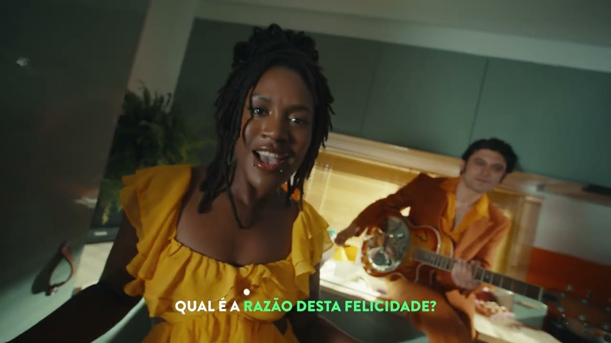

2018 · Art Department · Dir. Gabriel Abrantes & Daniel Schmidt
Diamantino
Grand Prize · Semaine de la Critique · Cannes 2018
A genre-bending political satire whose visual identity is its punchline.
View on IMDbCommercial · Cinema · Lisbon
Lisbon-born scenographer. In cinema since 2011, in advertising since 2016. Cannes Critics' Week credit on Diamantino (2018). Direct line — no agent.

Working since
Cinema 2011 · Commercials 2016
Trained
Arroio · Faculdade de Arquitetura · ESTC
Selected films
Marta’s cinema credits include a Cannes Critics’ Week winner and a MOTELx Best Short.
2018 · Art Department · Dir. Gabriel Abrantes & Daniel Schmidt
Grand Prize · Semaine de la Critique · Cannes 2018
A genre-bending political satire whose visual identity is its punchline.
View on IMDb2017 · Production Designer (with Mathieu Lazare Fromenteze) · Dir. Laurence Ferreira Barbosa
Todos os Sonhos do Mundo · Prod. Paulo Branco / Leopardo Filmes
A France–Portugal feature about the Portuguese diaspora — design that straddles two countries.
Producer page2014 · Art Department · Dir. João P. Nunes
Best Short Film · MOTELx 2014
A Kafka-inflected horror short about a hunter who becomes the hunted.
View on IMDb2013 · Art Director · Dir. Luís Brás
Her earliest credit on record — adventure drama, short form.
View on IMDbCannes Critics’ Week 2018 MOTELx 2014 Best Short Leopardo Filmes — Paulo Branco In cinema since 2011
Selected campaigns
From automotive prestige to public-service campaigns — the through-line is the set.
About
Lisbon-born, August 1990. Marta trained as a scenographer — Escola Artística António Arroio, then a bachelor's in Scenography at Faculdade de Arquitetura, then a master's in Scene Design at ESTC. She didn't drift into film design from graphics. She came in as an architect of the stage and the frame.
In the cinema arts department since 2011, in advertising since 2016. Pela Boca Morre o Peixe took Best Short at MOTELx 2014. Todos os Sonhos do Mundo, produced by Paulo Branco's Leopardo Filmes, followed in 2017. Then Diamantino — the political satire she helped dress — won the Grand Prize at Semaine de la Critique, Cannes 2018. The range runs from Kafkaesque horror short to Cannes-winning satire to high-gloss automotive.
Today she runs the art department on set, bilingually, on Lisbon-based productions. Cinema and commercials aren't separate practices — the cinema craft is what makes the commercials worth watching. Direct line. No agent.
Contact
Marta represents herself. Email or WhatsApp lands directly with her — no agents, no gatekeepers, no briefing forms.
hellomartadovale@gmail.com
Write to Marta
Phone · WhatsApp
+351 918 373 368
Open WhatsApp
@martadovale.art
See recent work
IMDb
Selected film credits
Open IMDb profile
Lisbon, Portugal · Available worldwide.